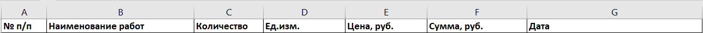
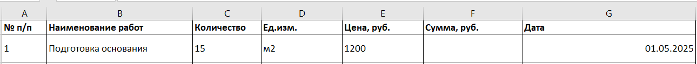
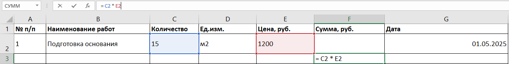

Excel для инженеров-строителей: базовый уровеньЛокальный архив курса
Тема 1: Погружение в Excel
Основы работы и базовые функции Excel
Ввод данных
Ильфак ВалиевЭксперт Excel, инженер-строитель
Андрей, рад снова тебя видеть. Если ты уже освоился с интерфейсом Excel и понял, как работают ячейки, строки, столбцы и листы — значит, ты готов к следующему шагу.
Сегодня мы погружаемся в одну из самых важных тем — ввод данных. Это кажется простым, но именно здесь чаще всего допускаются ошибки, которые потом мешают расчетам и визуализации. Мы научимся правильно вводить текст, числа и даты, а также разберем, как Excel "понимает", что ты вводишь, и как избежать недоразумений. Всё это на реальном примере — ведомости объемов работ, которую инженеры используют в проектах каждый день. В этом уроке мы сделаем первые вычисления с формулами и подготовим основу для дальнейшей автоматизации. Так что не пропускай детали — они важны. Готов? Тогда открывай Excel, и давай продолжим обучение!
Что можно вводить в ячейку
Итак, начнем с основ. В ячейку Excel можно ввести три основных типа данных:
Текст — например, название работы или материал
Число — количество, цена
Дата — сроки выполнения или поставки
Excel сам распознает, что ты вводишь. Но иногда он может ошибиться. Например, если ввести «1.3», он может решить, что это дата. Поэтому важно знать, как управлять форматами вручную.
Как вводить текст, числа и даты
Текст: Просто вводим буквы — «Бетон», «Арматура», «Подготовка основания». Текст по умолчанию выравнивается по левому краю.
Числа: Цифры — например, «1200» или «3.5». Excel сам распознает числовой формат и выравнивает число по правому краю.
Даты: Можно вводить в формате «01.05.2025» или «2025-05-01». Excel поймет оба.
Если ты хочешь, чтобы Excel точно понял, что это дата, а не текст — проверь, как выравнивается значение. Если по центру или слева — скорее всего это текст.
Ввод формул
Кроме простого ввода, мы можем делать вычисления. Например, умножать количество на цену, чтобы получить сумму.
Формула всегда начинается со знака «=». Например: = C2 * E2. Это значит: умножь значение в ячейке C2 на значение в E2 — получишь общую стоимость.
Нажми Enter — и Excel сам посчитает. А если нужно скопировать формулу вниз — просто потяни за угол ячейки.
Практическая часть
Переходим к практике. Сейчас создадим ведомость объемов работ, в которую внесем текст, числа и даты.
Открой новый Excel-файл.
В ячейках A1:G1 введи заголовки:

Заполни строку данных:

В ячейке F2 введи формулу: = C2 * E2 и нажми Enter

Это даст нам сумму: 15 × 1200 = 18 000. Протяни формулу вниз — и она сработает для всех следующих строк.
Добавь еще 2 строки с разными работами, датами и ценами.
Если хочешь ввести число как текст (например, код позиции), начинай с апострофа: «'00123».
Ну что, самое время попрактиковаться! Как и в прошлом уроке, для начала закрепи полученные навыки в интерактивном тренажере «Правда-ложь», а затем переходи к выполнению домашнего задания.
Встроенный материал: Flipcard — открыть сохранённое содержание
Текст и изображения извлечены из исходного блока. Проверка ответов здесь не выполняется.
Excel выдаст ошибку, если ввести «01.01.2025» в ячейку
Правда
Ложь
Пояснение источника: Excel распознает дату, если ввести «01.01.2025» в ячейку
Если текст в ячейке выравнивается по правому краю, то это формула
Правда
Ложь
Пояснение источника: Если текст в ячейке выравнивается по правому краю, то это дата
Формула в Excel начинается с «=»
Правда
Ложь
Пояснение источника: Формула в Excel начинается с «=»